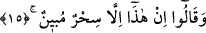
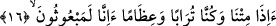
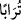
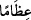
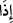
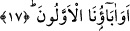
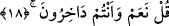

15. Bu ancak açık bir büyüdür, derler.
“Bu” âyet ve mucize “ancak açık bir büyüdür, derler.” Âyette şuna işaret
edilmektedir. İnkar ehli Allah’ın âyetlerinden bir âyet olan bir adamı (bir peygamberi)
gördükleri zaman onunla alay eder ve ona iman etmezler. O zâtın getirdiğine “bu açık
bir büyüdür” derler. Zira onların inkar perdesiyle ve hidâyet ehlini sapıklığa nispet
etmekle işin hakikatini görmekten basiretleri kapanmıştır.
Onların gözünde can nuru olmadığından
Hakk’ın sözü, onlar nezdinde hayal oldu
16. «Gerçekten biz öldüğümüz, toprak ve kemik olduğumuz zaman mı,
diriltileceğiz?»
“Gerçekten biz öldüğümüz, toprak ve kemik olduğumuz zaman mı, diriltileceğiz?”
yani biz dirilmeyiz. Diğer bir ifadeyle, onlar ‘Ölüp toprak olduğumuz, etsiz ve derisiz
kemikler hâline geldiğimiz zaman kabirlerimizde kalkıp hayat bulur muyuz acaba’ diye
alay mı ediyorlar?
Toprak, çürümüş moleküllerden dönüştüğü için burada toprak mânâsında olan “
”
kelimesi, kemikler mânâsına gelen “
” kelimesinden önce gelmiştir. Buradaki hemze,
inkar ve yokluk ifade eder. Zarf olan “ ” kelimesinin hükümden önce getirilmesi, zarfı
oldukça zıt ve aykırı bir hale tevcih ederek dirilişi inkar etmeyi takviye içindir.
17. «İlk atalarımız da mı (diriltilecek)?»
Babaları ve dedeleri daha kadim ve eski olduğu için onların inançlarına göre güya
babalarının diriltilmeleri daha uzak bir ihtimal ve hatta muhâldir. Bu sözle diriliş
gerçeğini daha çok uzak gördüklerini ifade etmektedirler.
18. De ki: Evet, hem de hor ve hakir olarak (diriltileceksiniz).